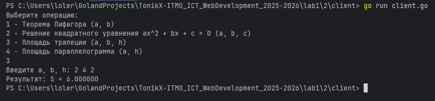

Задание 2: TCP-клиент и сервер для вычислений
Условие
Реализовать клиентскую и серверную часть приложения. Клиент запрашивает выполнение математической операции, параметры которой вводятся с клавиатуры. Сервер обрабатывает данные и возвращает результат клиенту.
Требования:
- Обязательно использовать библиотеку
socket. - Реализовать с помощью протокола TCP.
Код программы
Сервер (server.py)
package main
import (
"encoding/json"
"fmt"
"math"
"net"
"strings"
)
// Request - формат запроса клиент-сервер
type Request struct {
Operation string `json:"operation"`
Params []float64 `json:"params"`
}
// Response - формат ответа сервер-клиент
type Response struct {
Result string `json:"result,omitempty"`
Error string `json:"error,omitempty"`
}
func main() {
ln, err := net.Listen("tcp", ":8080")
if err != nil {
panic(err)
}
defer func(ln net.Listener) {
err := ln.Close()
if err != nil {
fmt.Println(err)
}
}(ln)
fmt.Println("TCP сервер запущен на :3000")
for {
conn, err := ln.Accept()
if err != nil {
fmt.Println("accept error:", err)
continue
}
go handleConn(conn) // каждый клиент — в отдельной горутине
}
}
func handleConn(c net.Conn) {
defer func(c net.Conn) {
err := c.Close()
if err != nil {
fmt.Println("close error:", err)
}
}(c)
var req Request
if err := json.NewDecoder(c).Decode(&req); err != nil {
_ = json.NewEncoder(c).Encode(Response{Error: fmt.Sprintf("некорректный JSON: %v", err)})
return
}
op := strings.ToLower(strings.TrimSpace(req.Operation))
switch op {
case "pythagoras":
if len(req.Params) != 2 {
writeErr(c, "ожидается 2 параметра: a, b")
return
}
a, b := req.Params[0], req.Params[1]
if a < 0 || b < 0 {
writeErr(c, "a и b должны быть неотрицательны")
return
}
res := math.Sqrt(a*a + b*b)
writeOK(c, fmt.Sprintf("c = %.6f", res))
case "quadratic":
if len(req.Params) != 3 {
writeErr(c, "ожидается 3 параметра: a, b, c")
return
}
a, b, cc := req.Params[0], req.Params[1], req.Params[2]
const eps = 1e-12
if math.Abs(a) < eps {
if math.Abs(b) < eps {
if math.Abs(cc) < eps {
writeOK(c, "бесконечно много решений (0 = 0)")
} else {
writeOK(c, "нет решений")
}
return
}
x := -cc / b
writeOK(c, fmt.Sprintf("линейное уравнение: x = %.6f", x))
return
}
D := b*b - 4*a*cc
switch {
case D > eps:
sq := math.Sqrt(D)
x1 := (-b - sq) / (2 * a)
x2 := (-b + sq) / (2 * a)
writeOK(c, fmt.Sprintf("D = %.6f > 0; x1 = %.6f, x2 = %.6f", D, x1, x2))
case math.Abs(D) <= eps:
x := -b / (2 * a)
writeOK(c, fmt.Sprintf("D = 0; x = %.6f", x))
default:
absD := math.Sqrt(-D)
re := -b / (2 * a)
im := absD / (2 * a)
writeOK(c, fmt.Sprintf("D = %.6f < 0; x1 = %.6f - %.6fi, x2 = %.6f + %.6fi", D, re, im, re, im))
}
case "trapezoid":
if len(req.Params) != 3 {
writeErr(c, "ожидается 3 параметра: a, b, h")
return
}
a, b, h := req.Params[0], req.Params[1], req.Params[2]
if a <= 0 || b <= 0 || h <= 0 {
writeErr(c, "a, b, h должны быть > 0")
return
}
S := (a + b) / 2 * h
writeOK(c, fmt.Sprintf("S = %.6f", S))
case "parallelogram":
if len(req.Params) != 2 {
writeErr(c, "ожидается 2 параметра: a, h")
return
}
a, h := req.Params[0], req.Params[1]
if a <= 0 || h <= 0 {
writeErr(c, "a и h должны быть > 0")
return
}
S := a * h
writeOK(c, fmt.Sprintf("S = %.6f", S))
default:
writeErr(c, "неизвестная операция")
}
}
func writeOK(c net.Conn, msg string) {
_ = json.NewEncoder(c).Encode(Response{Result: msg})
}
func writeErr(c net.Conn, msg string) {
_ = json.NewEncoder(c).Encode(Response{Error: msg})
}
Клиент (client.go)
package main
import (
"encoding/json"
"fmt"
"log"
"net"
"os"
)
// Request - формат запроса клиент-сервер
type Request struct {
Operation string `json:"operation"`
Params []float64 `json:"params"`
}
// Response - формат ответа сервер-клиент
type Response struct {
Result string `json:"result,omitempty"`
Error string `json:"error,omitempty"`
}
func main() {
conn, err := net.Dial("tcp", "127.0.0.1:8080")
if err != nil {
panic(err)
}
defer func(conn net.Conn) {
err := conn.Close()
if err != nil {
log.Printf("error closing connection: %v", err)
}
}(conn)
fmt.Println("Выберите операцию:")
fmt.Println("1 - Теорема Пифагора (a, b)")
fmt.Println("2 - Решение квадратного уравнения ax^2 + bx + c = 0 (a, b, c)")
fmt.Println("3 - Площадь трапеции (a, b, h)")
fmt.Println("4 - Площадь параллелограмма (a, h)")
var choice int
if _, err := fmt.Scan(&choice); err != nil {
fmt.Println("некорректный ввод:", err)
return
}
var req Request
switch choice {
case 1:
var a, b float64
fmt.Print("Введите a и b: ")
if _, err := fmt.Scan(&a, &b); err != nil {
fmt.Println("некорректный ввод:", err)
return
}
req = Request{Operation: "pythagoras", Params: []float64{a, b}}
case 2:
var a, b, c float64
fmt.Print("Введите a, b, c: ")
if _, err := fmt.Scan(&a, &b, &c); err != nil {
fmt.Println("некорректный ввод:", err)
return
}
req = Request{Operation: "quadratic", Params: []float64{a, b, c}}
case 3:
var a, b, h float64
fmt.Print("Введите a, b, h: ")
if _, err := fmt.Scan(&a, &b, &h); err != nil {
fmt.Println("некорректный ввод:", err)
return
}
req = Request{Operation: "trapezoid", Params: []float64{a, b, h}}
case 4:
var a, h float64
fmt.Print("Введите a и h: ")
if _, err := fmt.Scan(&a, &h); err != nil {
fmt.Println("некорректный ввод:", err)
return
}
req = Request{Operation: "parallelogram", Params: []float64{a, h}}
default:
fmt.Println("Неверный выбор.")
os.Exit(1)
}
// Отправляем запрос и читаем ответ
if err := json.NewEncoder(conn).Encode(req); err != nil {
fmt.Println("ошибка отправки:", err)
return
}
var resp Response
if err := json.NewDecoder(conn).Decode(&resp); err != nil {
fmt.Println("ошибка чтения ответа:", err)
return
}
if resp.Error != "" {
fmt.Println("Ошибка:", resp.Error)
} else {
fmt.Println("Результат:", resp.Result)
}
}
Запуск
- Необходимо открыть два терминала.
- В первом запустите сервер:
go run server.go - Во втором терминале запустите клиент:
go run client.go
Результат
Cо стороны клиента видим:

Математическая операция выполнена успешно.
Выводы
- Реализовано корректное TCP-взаимодействие между клиентом и сервером с использованием библиотеки
net. - Сервер обрабатывает входные данные и возвращает результат вычислений клиенту.
- Задание выполнено в соответствии с требованиями — программа работает стабильно и обрабатывает ошибки.